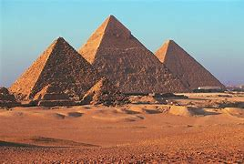

The Pyramids
The great pyramids of Giza are
one of the best human creations.
They were made by ancient egyptians
back at an unknown time.
Designed to be used as tombs
by the pharaohs.
But there is more to them than that.

The ancient egyptian pyramids are one of the world's 7 ancient wonders, and they're the only ancient wonder still standing.
The design for the pyramids is a very complicated one, to this day scientists struggle to find out how the pyramids were built.
Nobody knows how they moved such giant and heavy rocks, or even how they stacked them in such a way, but what is know, is how
precise their location was, the coordinates of the pyramids (29.9792458) is exactly the speed of light in m/s. the alignment of
the pyramids is no coincidence either, they were made to be alligned with mercury, venus and saturn at the time, and once every
2737 years, and it actually happened on the 3rd of December 2012. how the egyptians made all of this without the use of modern
technology is one of the world's biggest mysteries.